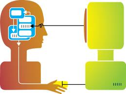
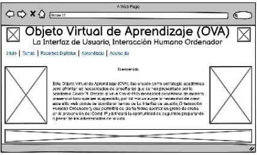

¿Qué es la Interacción Humano-Computadora?
La Interacción Humano-Computadora se convirtió oficialmente en una disciplina con el advenimiento de
la computadora personal. Con el primer Macintosh, IBM PC 5150
y Commodore 64 utilizados en la oficina, la gente empezó a darse cuenta de cómo esta transición afect
ará no sólo a su trabajo sino a sus vidas en general. Los PCs fueron
lanzados con muchas nuevas características como procesadores de texto, facilidades de juego y
ayudas de contabilidad. Con el tiempo, su nivel de sofisticación aumentó
hasta el punto en que el objetivo era hacer que la interacción hombre-computadora se asemejar
a a la interacción entre humanos, de la forma más natural y sin fisuras posible.
¿Por qué es importante el estudio de la Interacción Humano-Computadora?
En la Interacción Humano-Computadora, las palabras clave son usabilidad, seguridad y funcionalidad.
Además, para producir sistemas con estas características, la investigación
de HCI debe ser consciente de las siguientes cosas:
1. Investigar y comprender los factores
organizacionales, sociales y psicológicos.
2. enfoque centrado en las personas.
 